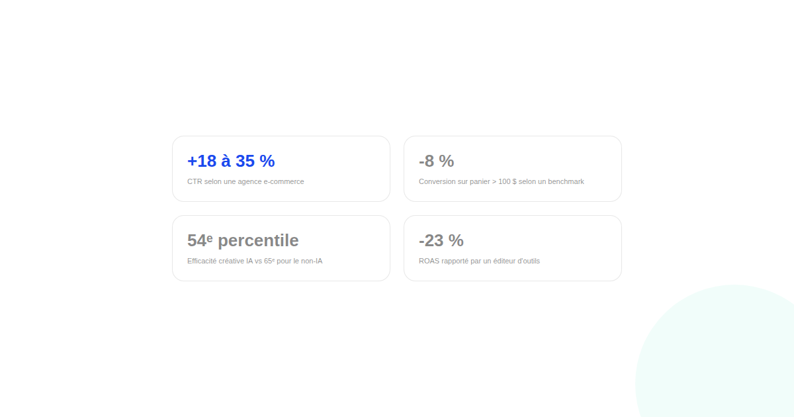

Créations publicitaires par IA (Meta Advantage+) : ce que les chiffres qui se contredisent révèlent
Plus de 4 millions d'annonceurs utiliseraient déjà les outils de création publicitaire par IA de Meta. Mais les chiffres de performance circulant sur ces créas se contredisent frontalement selon la source — et c'est justement ce qui est le plus instructif.

Depuis mars 2026, les outils de création publicitaire par IA générative de Meta couvrent davantage de terrain : doublage avec synchronisation labiale dans la voix de l'annonceur, arrière-plans de style de vie générés automatiquement, musique de fond générée elle aussi. Meta impose désormais une déclaration pour tout contenu publicitaire généré ou significativement modifié par IA. Le signal d'adoption est fort : plus de 4 millions d'annonceurs utiliseraient ces outils. Ce qui l'est beaucoup moins, c'est ce que ces créas produisent réellement en performance — et c'est là que les chiffres se contredisent ouvertement selon qui les publie.
Quatre claims, quatre sources, quatre conclusions différentes
Une agence spécialisée e-commerce avance une hausse de 18 à 35 % du taux de clic sur des créas produit physique générées par IA. Un autre outil de benchmark, sur plus de 50 000 variantes publicitaires analysées, rapporte une hausse de clic plus modeste de 12 %, mais une baisse de conversion de 8 % sur les produits à panier moyen supérieur à 100 $. Une étude citant les méthodes d'évaluation créative de Kantar place les publicités génératives au 54e centile d'efficacité créative, contre 65e centile pour les créas non générées par IA. Un éditeur d'outils marketing rapporte, lui, une baisse de ROAS de 23 % immédiatement après une bascule vers la création IA, sans méthodologie publiée permettant de vérifier ce chiffre.
Ce que ces contradictions ont en commun
Aucun de ces chiffres ne vient d'une étude indépendante avec méthodologie publiée et échantillon vérifiable : ce sont des claims d'agences, d'éditeurs d'outils ou de Meta elle-même, chacun avec un intérêt à raconter une histoire qui lui est favorable. Le seul point de convergence réel entre ces sources contradictoires : un taux de clic en hausse ne garantit pas une conversion en hausse, en particulier sur des produits à prix plus élevé où l'achat est plus réfléchi.
Le signal le plus solide : la perception quand l'IA est identifiée
Un signal plus cohérent émerge sur un point différent : quand un consommateur identifie explicitement une publicité comme générée par IA, la perception de qualité premium recule d'environ 17 %, l'effet d'inspiration de 19 %, et l'intention d'achat de 14 %. Ce chiffre reste lui aussi à prendre avec la prudence habituelle sur une mesure d'intention déclarée, mais il converge avec l'intuition : la question n'est pas seulement « l'IA génère-t-elle une bonne créa », mais « le consommateur sait-il qu'elle en est une, et cela change-t-il sa perception de la marque ».
Comment tester chez vous plutôt que de croire une statistique
Face à des chiffres publics qui se contredisent, la seule donnée fiable est la vôtre : tester une créa générée par IA contre une créa classique sur un même segment d'audience, mesurer au-delà du taux de clic jusqu'à la conversion et, si possible, jusqu'au ROAS, et séparer les résultats par gamme de prix plutôt que de regarder une moyenne globale qui masque des effets opposés selon le panier moyen.
FAQ
Faut-il faire confiance aux chiffres de performance publiés par les agences sur la création IA ?
Avec prudence : la plupart de ces chiffres viennent d'agences, d'outils tiers ou de Meta elle-même, sans méthodologie publiée ni échantillon indépendant vérifiable. Ils indiquent une tendance possible, pas une donnée actionnable sans test propre.
La création publicitaire par IA est-elle obligatoire sur Meta Ads ?
Non, mais Meta impose depuis mars 2026 une déclaration quand un contenu publicitaire est généré ou significativement modifié par IA, ce qui en pratique pousse à davantage de transparence sur son usage plutôt qu'à son interdiction.
Pourquoi un produit à prix élevé réagit-il différemment à la créa IA qu'un produit à prix bas ?
Un panier moyen élevé s'accompagne souvent d'un achat plus réfléchi, où la perception de qualité et d'authenticité de la créa pèse davantage sur la décision finale que le seul taux de clic initial, ce qui explique en partie l'écart observé entre CTR et conversion sur ces produits.
Envie de tester la création publicitaire par IA sans vous fier aux moyennes du marché ?
Pour aller plus loin, voir la page SMA, et l'article Meta Ads : segmenter ses audiences.
Pour continuer sur ce sujet.